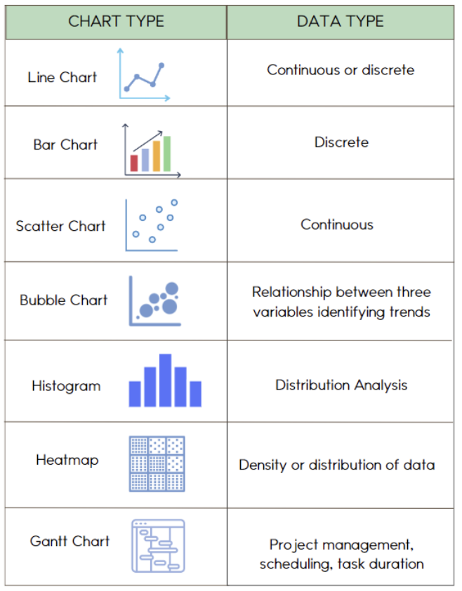
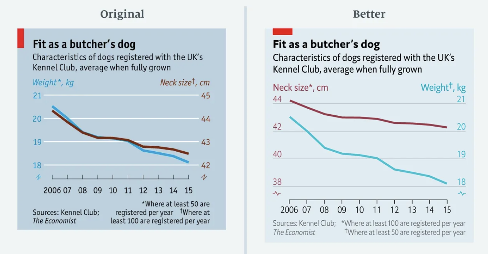
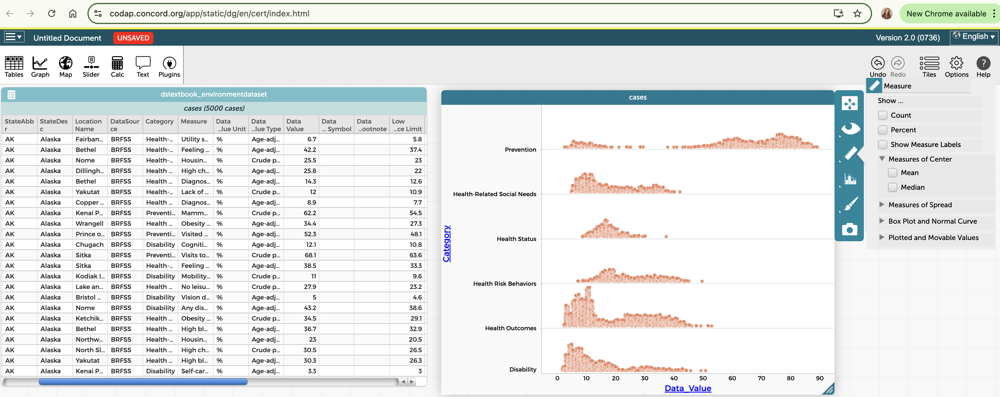

Data visualization serves several crucial functions in the data science process:
Exploration
Visualizations help us discover patterns, relationships, and outliers that might not be apparent in raw data or summary statistics.
Analysis
Visual representations allow us to compare groups, identify trends, and test hypotheses about our data.
Communication
Well-designed visualizations make complex findings accessible to others, supporting decision-making and action.
Engagement
Visual elements capture attention and make data more engaging and memorable than text or numbers alone.
The power of visualization is illustrated by Anscombe’s Quartet, a set of four datasets with nearly identical statistical properties but dramatically different visual patterns:
Each of the four datasets in Anscombe’s Quartet has the same mean, variance, correlation, and linear regression line. If we relied only on these summary statistics, we’d miss the crucial differences between these datasets. Visualization reveals what statistics alone can hide.
Checkpoint89.Visualization Purpose.
Which of the following is NOT a primary purpose of data visualization?
To discover patterns and relationships in data
This is a primary purpose of data visualization - helping analysts discover patterns, trends, and relationships that might not be apparent in raw data.
To communicate insights to diverse audiences
This is a primary purpose of data visualization - making complex findings accessible and understandable to various stakeholders.
To increase the volume of data that can be presented
Correct! While visualizations can represent large datasets, the primary goal is not to maximize the volume of data presented. In fact, effective visualization often involves carefully selecting what data to present to avoid overwhelming the viewer.
To identify outliers and unusual patterns
This is a primary purpose of data visualization - making outliers and anomalies in the data immediately visible for further investigation.
SubsectionChoosing the Right Visualization
Different types of data and questions call for different visualization approaches. Selecting the right chart type is essential for effectively representing your data.
Here are some common visualization types and their appropriate uses:
Bar Charts/Column Charts
Best for comparing values across discrete categories.
Vertical bars (columns): Good for comparing values across categories
Horizontal bars: Useful when category names are long or there are many categories
Grouped bars: For comparing multiple measurements across categories
Stacked bars: For showing composition within categories
Line Charts
Best for showing trends over time or continuous variables.
Single line: Shows trend in one variable
Multiple lines: Compares trends across groups
Area charts: Emphasize magnitude along with trend
Scatter Plots
Best for examining relationships between two numerical variables.
Simple scatter: Shows correlation between two variables
Bubble charts: Add a third dimension through point size
Scatter with groups: Compare relationships across categories
Pie Charts
Best for showing parts of a whole (composition) when there are few categories.
Use only when the sum is meaningful and categories are few (preferably 5 or fewer)
Consider alternatives like stacked bars for more effective comparison
Histograms
Best for showing the distribution of a single numerical variable.
Shows frequency of values falling within specific ranges (bins)
Reveals shape of distribution (normal, skewed, bimodal, etc.)
Box Plots
Best for showing distribution summary and comparing distributions.
Shows median, quartiles, range, and outliers
Excellent for comparing distributions across groups
Heat Maps
Best for showing patterns across two categorical dimensions.
Uses color intensity to represent a third variable
Good for large datasets with complex patterns
Maps
Best for showing spatial patterns and geographic distributions.
Choropleth maps: Color regions based on data values
Dot maps: Show individual locations or events

Figure90.Common Chart Types
When choosing a visualization type, consider:
What question are you trying to answer?
What types of variables are you working with (categorical, numerical, time-based)?
What relationship or pattern are you trying to show (comparison, composition, distribution, relationship)?
Who is your audience and what is their level of data literacy?
Checkpoint91.Matching Chart Types to Questions.
Match each data visualization question with the most appropriate chart type.
How has unemployment rate changed over the past 10 years?
Line chart
What is the relationship between study time and test scores?
Scatter plot
How do average incomes compare across different education levels?
Bar chart
What is the distribution of home prices in a neighborhood?
Histogram
How do temperature distributions vary across seasons?
Box plot
How is the city budget allocated across departments?
Pie chart
Activity25.Chart Selection for Your Dataset.
In this activity, you’ll identify appropriate visualization types for different aspects of your dataset.
(a)
Write down at least three specific questions you want to answer with visualizations of your dataset.
(b)
For each question, identify:
The variables involved (including their types: categorical, numerical, time-based)
The most appropriate visualization type to answer the question
Why this visualization type is the best choice for your specific question
(c)
Share your choices with a classmate and provide feedback on each other’s selections.
SubsectionPrinciples of Effective Visualization
Creating effective visualizations requires more than just selecting the right chart type. Well-designed visualizations follow these key principles:
Show the Data
The primary purpose of a visualization is to clearly present the data. Avoid unnecessary decorations or "chart junk" that distracts from the data.
Reduce Cognitive Load
Make it as easy as possible for viewers to extract insights. Minimize the mental effort required to interpret the visualization.
Focus Attention
Use visual elements like color, size, and position to direct attention to the most important aspects of the data.
Provide Context
Include reference points, comparisons, or baselines that help viewers understand the significance of the data.
Be Truthful
Represent the data accurately without distortion. Ensure that visual encodings are proportional to the data values.
Specific design principles include:
Clear labeling: Include descriptive titles, axis labels, and legends
Thoughtful color use: Choose accessible color schemes and use color consistently and purposefully
Appropriate scales: Use scales that accurately represent the data, generally starting at zero for bar charts
Data-ink ratio: Maximize the ratio of "ink" used to display data versus decorative elements
Simplicity: Include only what’s necessary, removing redundant or distracting elements
Consistency: Use consistent formats, scales, and styles across related visualizations

Figure92.Good vs. Problematic Visualization
Example93.Visualizing Community Health Data.
For our Community Health dataset, effective visualizations might include:
A scatter plot showing the relationship between air quality index and asthma rates across neighborhoods, with points colored by income level to reveal potential socioeconomic patterns
A grouped bar chart comparing multiple health metrics (asthma, obesity, heart disease) across different regions of the city, allowing for direct comparison of health outcomes
A choropleth map showing the spatial distribution of environmental risk factors across the city, revealing geographic patterns and potential hotspots
Box plots comparing the distribution of health outcomes across neighborhoods with different levels of green space access, showing both central tendency and variation
A connected scatter plot showing how the relationship between environmental factors and health outcomes has changed over time
Checkpoint94.Steps for Creating Effective Visualizations.
Arrange the following steps in a logical order for creating an effective data visualization.
Clarify the specific question or insight you want the visualization to address.
---
Select the appropriate chart type based on your data and question.
---
Add as many decorative elements as possible to make the visualization attractive.
#paired
---
Use the most complex visualization possible to impress your audience.
#paired
---
Prepare and transform your data as needed for the visualization.
---
Create a first draft of the visualization with the essential elements.
---
Add clear titles, labels, and other contextual information.
---
Refine the design by removing clutter and emphasizing key insights.
---
Manipulate the scales to make patterns look more dramatic.
#distractor
Hint.
Think about how you would first plan what you want to show before deciding how to show it.
Activity26.Visualization Critique.
In this activity, you’ll analyze and critique existing visualizations using the principles we’ve discussed.
(a)
Find three different data visualizations from news articles, reports, or websites. Try to include at least one visualization that you think is particularly effective and one that could be improved.
(b)
For each visualization, evaluate:
Is the chart type appropriate for the data and question?
How well does it follow the principles of effective visualization?
What works well about this visualization?
How could it be improved?
(c)
For the visualization that needs improvement, sketch or describe how you would redesign it to be more effective.
SubsectionCreating Visualizations in CODAP
CODAP offers a variety of tools for creating interactive visualizations. Let’s explore how to use these tools effectively.
Key visualization features in CODAP include:
Graph tool: Create scatter plots, line plots, and dot plots by dragging attributes to axes
Plot type menu: Change between dot plots, box plots, histograms, and other display types
Axis options: Adjust scales, binning, and other axis properties
Grouping: Split data into categories using the ruler tool
Legend attributes: Add color, size, or shape encoding by dragging attributes to the legend area
Connecting lines: Show connections between related points
Map tool: Display geographic data on interactive maps

Figure95.CODAP Visualization Tools
Steps for creating effective visualizations in CODAP:
Open the Graph or Map tool from the main toolbar
Drag attributes from your dataset to the axes or legend area
Select the appropriate plot type from the menu
Adjust axis scales, binning, and other properties as needed
Add additional attributes to the legend to encode with color, size, or shape
Use the ruler tool to create groupings or reference lines
Add text objects with titles, labels, or explanatory notes
Arrange multiple visualizations to create a dashboard
Activity27.Creating Visualizations in CODAP.
In this activity, you’ll practice creating various types of visualizations in CODAP using your dataset.
(a)
Create at least one of each of the following visualization types using your dataset:
Scatter plot showing the relationship between two numerical variables
Bar chart or dot plot comparing values across categories
Histogram showing the distribution of a numerical variable
Box plot comparing distributions across groups
(b)
For each visualization:
Add appropriate titles and labels
Adjust scales and binning as needed
Use color or other visual encodings to add an additional dimension
Write a brief interpretation of what the visualization reveals
(c)
Arrange your visualizations to create a simple dashboard with at least three different charts that together tell a story about your data.
Checkpoint96.CODAP Visualization Features.
Which CODAP feature would be MOST appropriate for examining how a relationship between two numerical variables differs across categories?
Changing from a dot plot to a histogram
Changing to a histogram would show the distribution of a single variable, not the relationship between two variables across categories.
Adding connecting lines between points
Connecting lines are typically used to show sequences or paths between related points, not to distinguish between categories.
Dragging a categorical attribute to the legend area to color points by category
Correct! By dragging a categorical attribute to the legend area, points in the scatter plot will be colored according to their category, allowing you to visually distinguish how the relationship differs across categories.
Using the ruler tool to add reference lines
While reference lines can be helpful markers, they don’t specifically help examine how relationships differ across categories.